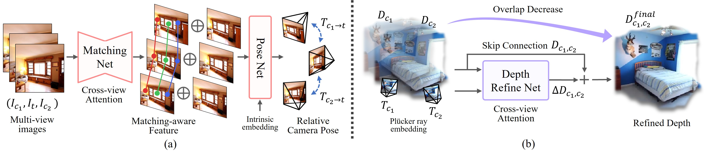

Pipeline

Given unposed multi-view images as input, we predict depth and Gaussian attributes from the images, as well as the relative camera poses between them. We unify a self-supervised depth estimation framework with explicit 3D representation achieving accurate scene reconstruction.
Matching-aware pose network (a) and depth refinement module (b). We leverage cross-view features from input images to achieve accurate camera pose estimation, and use these estimated poses to further refine the depth maps with spatial awareness.